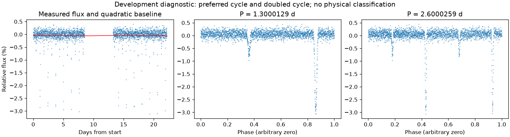
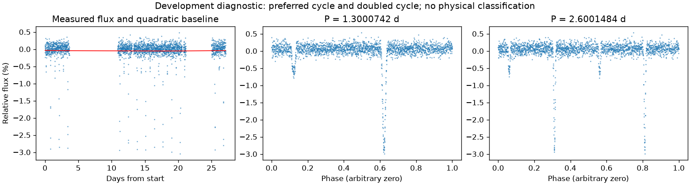

有重复信号，来源尚未充分检查
亮度重复周期约 1.30004356 天。这是优选亮度周期，未给出正式误差或物理分类。
第二版周期：1.3000129271403857 天；状态：preferred_lightcurve_cycle。

左图红线是缓慢基线；右面两图去除该基线。若未通过周期要求，两图只展示得分最高的竞争解释。
| 竞争周期（天） | 交替周期预测改善 | 两组各自改善 | 通过初筛 |
|---|---|---|---|
| 1.3000129 | 85.8% | 85.4% / 86.3% | 是 |
| 2.5990807 | 76.8% | 76.7% / 76.8% | 是 |
| 0.4333719 | 27.0% | 28.3% / 25.5% | 是 |
| 0.6499726 | -5.2% | -334.2% / 38.6% | 否 |
| 0.1623275 | -40.2% | -19.2% / -79.1% | 否 |
| 0.2164265 | -40.6% | -311.4% / -5.6% | 否 |
| 0.1082161 | -47.8% | -5.6% / -625.2% | 否 |
| 0.0811659 | -50.9% | -95.9% / -26.4% | 否 |
“预测改善”衡量用一组周期的形状预测另一组，比只有缓慢基线好多少；负数表示更差。搜索和预测共用了资料，因此这不是可信概率，也不是独立验证。
第二版周期：1.3000742011392703 天；状态：preferred_lightcurve_cycle。

左图红线是缓慢基线；右面两图去除该基线。若未通过周期要求，两图只展示得分最高的竞争解释。
| 竞争周期（天） | 交替周期预测改善 | 两组各自改善 | 通过初筛 |
|---|---|---|---|
| 1.3000742 | 86.8% | 87.1% / 86.4% | 是 |
| 2.6011966 | 72.9% | 72.1% / 73.8% | 是 |
| 0.4333751 | 30.5% | 28.3% / 32.4% | 是 |
| 0.6499817 | -1.5% | -358.4% / 37.1% | 否 |
| 0.1082224 | -35.6% | -494.7% / -4.6% | 否 |
| 0.1623303 | -35.7% | -190.7% / -6.5% | 否 |
| 0.2164386 | -41.7% | -350.4% / -7.5% | 否 |
| 0.3250462 | -62.8% | -4.8% / -957.4% | 否 |
“预测改善”衡量用一组周期的形状预测另一组，比只有缓慢基线好多少；负数表示更差。搜索和预测共用了资料，因此这不是可信概率，也不是独立验证。